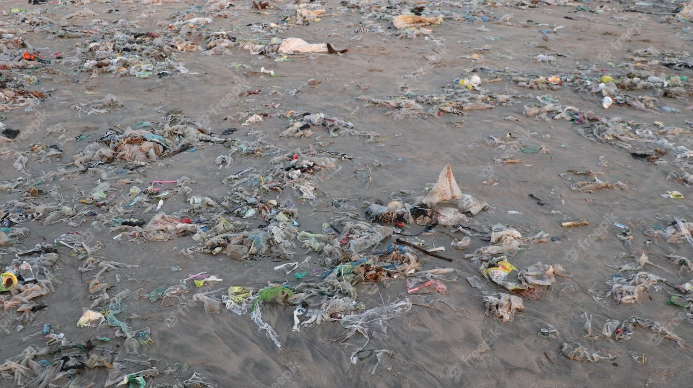

Os impactos da poluição plástica nos oceanos
← Página anterior | Voltar a página principal| Próxima página →
Por: Richard Castle - 15/06/2023

Os oceanos são um dos recursos mais preciosos do nosso planeta, fornecendo alimentos, regulação climática e sustentando a vida marinha diversa. No entanto, a poluição plástica emergiu como uma ameaça crescente aos oceanos, com efeitos devastadores sobre os ecossistemas marinhos e a vida selvagem. Neste artigo, discutiremos os impactos negativos da poluição plástica nos oceanos e a importância de enfrentar esse desafio global.
Destruição dos ecossistemas marinhos: A poluição plástica tem causado danos significativos aos ecossistemas marinhos, afetando recifes de coral, manguezais e áreas costeiras. O acúmulo de plástico nos oceanos interfere na cadeia alimentar e na biodiversidade, prejudicando a saúde dos ecossistemas e a capacidade deles de se regenerarem.
Ameaça à vida marinha: A ingestão e o emaranhamento em plásticos representam uma ameaça séria para a vida marinha. Animais como tartarugas marinhas, aves, peixes e mamíferos marinhos confundem pedaços de plástico com alimentos e acabam sofrendo danos físicos ou morrendo por asfixia ou fome. A poluição plástica também interfere nos habitats marinhos, tornando-os menos propícios à sobrevivência das espécies.
Contaminação química: Além dos danos físicos, a poluição plástica também causa contaminação química nos oceanos. O plástico pode liberar substâncias tóxicas ao longo do tempo, contaminando a água e afetando a vida marinha e os seres humanos que dependem dos recursos marinhos para subsistência.
Impactos socioeconômicos: A poluição plástica nos oceanos tem impactos socioeconômicos significativos. Setores como pesca, turismo costeiro e indústrias relacionadas ao mar são afetados negativamente pela degradação dos ecossistemas marinhos, resultando em perdas econômicas e diminuição da qualidade de vida das comunidades costeiras.
A importância da conscientização e ação: É fundamental aumentar a conscientização sobre a poluição plástica e promover ações para combatê-la. Iniciativas como a redução do uso de plásticos descartáveis, a reciclagem adequada e a limpeza de praia.